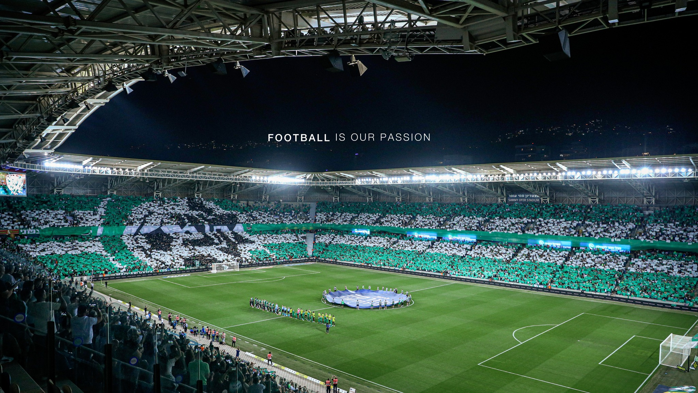
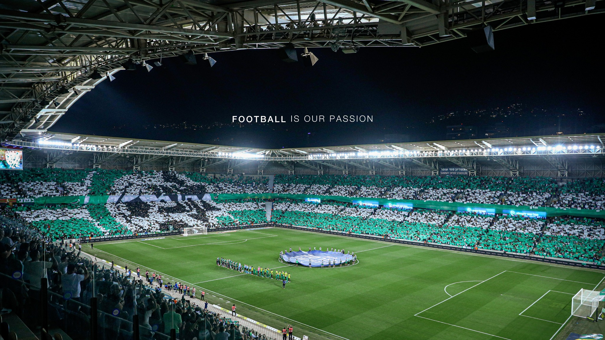

"Work hard in silence let success make the noise!"
"Remember why you started!"
"A little progress each day adds up to big results!"
About me:
I work at “ELBIT SYSTEMS LTD”, Karmiel, since March 2022, currently as a Production Planner.
My job includes planning and supervision of central and critical production lines,
working in an ERP system and recognition of production processes and product trees.
In addition, my work requires high planning and analytical skills,
ability to work under pressure , and multitasking and good Excel skills.
I study Economics And Management, Western Galilee College.
I am a B.A student, finishing my second year with a GPA of 98.17.
My specialization will include advanced python learning, machine learning and programming in the R language.

 
